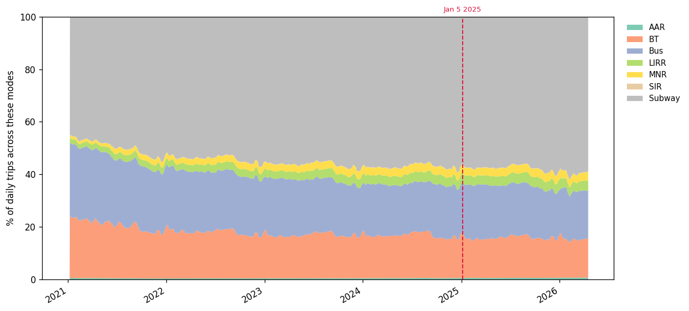

Did people switch modes, or just take more trips?
If the cordon worked the way its supporters expected, drivers would shift to transit. Vehicle counts would fall and ridership would rise by roughly the same amount. The MTA's daily ridership data tells a different story.
5.51 million daily trips in early 2024. 6.01 million in early 2025. About 493,000 more trips per day. The cordon did not eliminate movement into Manhattan. It did not even hold the line on growth.
What it did do is show up in the composition of those trips.
Bridges and tunnels lost share. Buses gained it.
| Mode | 2024 share | 2025 share | Change (pp) |
|---|---|---|---|
| Bridges & tunnels (vehicle entries) | 16.05 % | 14.78 % | −1.26 pp |
| Subway | 57.32 % | 57.46 % | +0.14 pp |
| Bus | 19.62 % | 20.61 % | +0.98 pp |
| Commuter rail + paratransit | 7.01 % | 7.14 % | +0.14 pp |
About 1.3 percentage points of share moved from the bridges and tunnels to the rest of the mix, and almost all of that landed on buses. Subway barely moved its share, it grew 9 % in absolute terms, but the rest of the modes grew right alongside it. Commuter rail and paratransit shifted by sub-percentage-point amounts.
This is the entire mode-shift effect of NYC's congestion pricing in its first four months: real, measurable, and modest.
Most modes were already growing

You can see the cordon line in the chart. You cannot see a regime change at it. Subway, bus, LIRR, and Metro-North were all on a steady post-pandemic recovery curve, which means the obvious framing ("transit ridership went up, the cordon worked") needs more care.
What's policy, and what's recovery?
If a mode was already growing 10 % a year, and it grows 10 % across the cordon line, that's not a policy effect, it's the trend continuing. To isolate what the cordon actually changed, I fit a linear trend on each mode's pre-treatment same-period ridership (2022, 2023, and 2024 Jan – Apr) and projected what 2025 would have been if the trend had continued. Then I compared observed 2025 to that projection.
| Mode | Naive Δ (2024 → 2025) | Trend-adjusted Δ |
|---|---|---|
| Bus | +14.4 % | +13.0 % |
| AAR | +24.5 % | +6.1 % |
| Subway | +9.2 % | −2.3 % |
| BT (vehicles) | +0.4 % | −2.3 % |
| SIR | +5.7 % | −3.1 % |
| LIRR | +11.6 % | −5.9 % |
| MNR | +8.4 % | −10.0 % |
Once you subtract recovery, the picture compresses dramatically. Bus is the only mode with a clean positive surprise, about 13 % above what its trend would have predicted. (And bus ridership is volatile enough that I'd read this as suggestive rather than precise, the pre-treatment trend fit on bus has an R² of just 0.11.)
BT vehicles are about 2.3 % below trend, which is consistent with the cordon doing real work on the inflow side. Everything else, Subway, LIRR, Metro-North, Staten Island Railway, actually under-shot its trend. The numbers that look like a mode-shift triumph in naive form are mostly recovery momentum that was already in motion.
The one exception is bus. If the cordon caused any single thing to happen, it caused buses to fill up faster than the trend would have predicted.
The clue is in which mode grew
Of the seven modes, buses are the one that clearly grew faster than the underlying recovery trend would predict. Subway barely moved its share. That's worth pausing on. If the toll were producing a clean "people switched from cars to the train" story, you'd expect subway share to jump. It didn't.
The likeliest explanation is that the people who actually switched aren't people who were already on the subway, they're people who weren't using transit at all. Specifically: residents of outer-borough neighborhoods that aren't well served by the subway in the first place. Parts of southern Brooklyn, eastern Queens, the central Bronx, Staten Island, the Rockaways. Places where driving is often the default, because the subway either doesn't go there or requires a long multi-transfer trip.
For a driver in one of those neighborhoods, the toll changes the math. The bus that runs nearby was always there; it just wasn't worth taking when driving in was free. With a $9 toll, the bus suddenly is.
That guess lines up with several other things in the data: the bridges that lost the most cars (Verrazzano-Narrows, Marine Parkway) are the ones serving exactly those transit-poor neighborhoods. The taxi-spillover pattern peaks three to five miles outside the cordon, which is roughly the same outer-borough fringe. And the mode-share shift, small as it is, lands almost entirely on buses rather than the subway.
It's a suggestion, not a proof. We can't see individual riders or know where they came from. But the pattern of which mode grew, where the spillover landed, and which bridges quietest is consistent with one specific story: the toll nudged outer-borough drivers onto the bus.
Same story over a 16-month window
The headline numbers above use the matched Jan – Apr window in 2024 and 2025. We have data running through April 2026, though, so I also ran the comparison over a longer window, the full 16 months after the toll switched on, against the matched 16-month window before it. That removes the seasonal-matching constraint and gives a wider view of whether the shift held up.
| Mode | 4-month change | 16-month change |
|---|---|---|
| Bus | +14.4 % | +7.5 % |
| Subway | +9.2 % | +4.2 % |
| LIRR | +11.6 % | +8.1 % |
| MNR | +8.4 % | +6.3 % |
| BT (vehicles) | +0.4 % | −1.1 % |
| AAR | +24.5 % | +26.3 % |
The numbers compress over the longer window, exactly what you'd expect if the four-month headline was riding partly on a seasonal recovery momentum that flattens out as the window grows. Bridge-and-tunnel vehicles, on the other hand, actually get more negative over 16 months: the small initial drop persisted instead of fading. AAR continues to grow at its own structural rate, regardless of window. The directional story holds, but the headlines are shaped by which window you pick.
Trips into the CBD grew. Mode share tilted modestly toward transit. But the CBD getting busier should also have shown up somewhere else: the air.